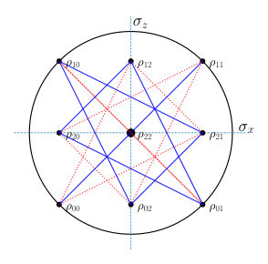

← Index · ← Previous · Next →
Authors: M. Sloan, J. E. Sipe
Type: theory · Category: quantum information and computing · PDF: https://arxiv.org/pdf/2605.10731v1
Analysis basis: abstract only; PDF text extraction failed or PDF unavailable
Topic relevance: 🔥 interference shaping light 4/5
Summary. This paper proposes using coupled microring resonators to enhance the generation of squeezed light. By leveraging hybridization effects, the researchers show it is possible to suppress parasitic noise and compensate for dispersion, significantly improving the fidelity and strength of the output squeezed state.
Why it may be interesting. It provides a theoretical strategy for improving the quality of squeezed light sources, which is fundamental for continuous-variable quantum information processing and quantum optical networks.
Main problem. The paper addresses the degradation of squeezed light generation in microring resonators due to parasitic four-wave mixing and group velocity dispersion.
Main result. The authors demonstrate that using an auxiliary resonator to hybridize modes can suppress unwanted four-wave mixing and compensate for dispersion, leading to near-unit fidelity and enhanced squeezing.
Method. A non-perturbative description of squeezed light generation is developed and applied to a dual-pump degenerate squeezing scheme.
Model / system. The system consists of multi-ring resonators, specifically focusing on two-ring photonic molecules with coupled microring resonators.
Key observables. Squeezing levels, output state fidelity, and resonance spectrum modifications.
Important parameters / regimes. Coupling strength between resonators, dual-pump configuration, and a five-resonance approximation.
Assumptions / limitations. The analysis utilizes a five-resonance approximation and assumes a dual-pump degenerate squeezing scheme.
Paper structure. The paper develops a non-perturbative theoretical framework, applies it to two-ring photonic molecules, and investigates two specific methods for suppressing noise and enhancing signal via hybridization.
We develop a non-perturbative description of squeezed light generation in an arbitrary lossy structure consisting of multiple coupled microring resonators. This is applied to two ring photonic molecules where the interference of the fields in the coupled rings leads to a modification in the resonance spectrum near a shared resonance. Considering a dual-pump degenerate squeezing scheme under a five resonance approximation, we investigate two methods to suppress parasitic four-wave mixing contributions and compensate for group velocity dispersion within a primary resonator through hybridization effects with a second auxiliary resonator. In the former case, this comes from an effective splitting of the unwanted resonances supporting parasitic four-wave mixing interactions that add thermal noise to the desired degenerate squeezed state. For sufficiently strong coupling between the resonators, we demonstrate near complete suppression of such parasitic processes, resulting in near unit fidelities with the corresponding output state that would arise were the parasitic interactions neglected. In the latter case, the hybridization effectively shifts a pump resonance, realigning the desired dual-pump four-wave mixing process and leading to a significant enhancement of the signal generation and output squeezing.
Authors: Nahid Talebi
Type: both · Category: quantum information and computing · PDF: https://arxiv.org/pdf/2605.10492v1
Analysis basis: abstract only; PDF text extraction failed or PDF unavailable
Topic relevance: QC/QI experiment 3/5 · entanglement & information structure 3/5 · quantum measurements 3/5 · correlated / nonlocal dissipation 2/5 · quantum optics experiment 2/5
Summary. This perspective paper reviews how electron beams in microscopes can be used to probe quantum coherence in semiconductors and 2D materials. It further explores the potential of using these beams to actively manipulate entanglement and correlations between quantum systems. This approach offers a new avenue for advancing semiconductor-based quantum computing hardware.
Why it may be interesting. It is interesting for researchers in open quantum systems and quantum optics because it explores a novel experimental platform (electron microscopy) for probing and controlling environmental interactions and entanglement in solid-state systems.
Main problem. The paper addresses the challenge of examining and controlling the interaction between semiconductor quantum qubits and their environment to enhance quantum technologies.
Main result. The author provides an overview of recent advancements in using electron-beam probes to investigate quantum coherence and proposes a perspective on using these beams to manipulate entanglement and correlations.
Method. The paper reviews the use of electron beams in electron microscopes as a tool for quantum-coherent probing and manipulation of semiconductor excitations.
Model / system. The physical systems discussed include semiconductor quantum qubits, two-dimensional materials, and semiconductor excitations subject to strong-coupling effects.
Key observables. Quantum coherence, entanglement, correlations, and strong-coupling effects.
Paper structure. The paper consists of a brief overview of recent advancements in electron-beam probes for investigating quantum coherence, followed by a perspective on using electron beams for the manipulation of entanglement and correlations.
Examining and controlling the interaction between semiconductor quantum qubits and their environment can boost semiconductor quantum technologies, which have many applications in table-top quantum computing hardware. Electron beams in electron microscopes have opened up a new avenue for the quantum-coherent probing of semiconductor excitations and strong-coupling effects. Here, I provide a brief overview of recent advancements in electron-beam probes for investigating quantum coherence in semiconductors and two-dimensional materials, complemented by my perspective on using electron beams to manipulate the entanglement and correlations between quantum systems.
Authors: N. V. Kuznetsova, A. D. Alliluev, D. V. Makarov, A. A. Anisich
Type: theory · Category: quantum gases · PDF: https://arxiv.org/pdf/2605.10472v1
Analysis basis: abstract only; PDF text extraction failed or PDF unavailable
Topic relevance: driven-dissipative phase transition 3/5 · non-equilibrium dynamics 3/5 · Keldysh / 2PI / non-Gaussian methods 2/5 · correlated / nonlocal dissipation 2/5 · methods for driven-dissipative 2/5
Summary. This paper explores how the size of an incoherent pump affects the formation of spatial patterns in exciton-polariton condensates. It demonstrates that the duration of dynamical memory determines whether the condensate forms extended states or angular structures. The findings highlight the role of non-Markovian effects and specific dispersion characteristics in shaping the macroscopic behavior of polariton fluids.
Why it may be interesting. It provides insights into non-Markovian effects and how memory-dependent dynamics drive pattern formation and spatial expansion in driven-dissipative quantum fluids.
Main problem. Investigating how the size of the incoherent pump spot influences pattern formation and spatial structures in exciton-polariton Bose-Einstein condensates within a non-Markovian framework.
Main result. The study finds that increasing the pump area leads to different spatial structures depending on memory duration: short memory leads to extended states outside the pump area due to a 'traffic jam' effect, while long memory leads to angular condensate structures that suppress matter wave emission.
Method. Numerical simulation using the non-Markovian stochastic Gross-Pitaevskii equation featuring a pseudo-differential dispersion term.
Model / system. An exciton-polaritonic Bose-Einstein condensate under incoherent pumping, modeled with a dispersion term corresponding to the lower energy branch of polaritons.
Key observables. Spatial structures of the condensate, condensate extent relative to the pump area, and emission of matter waves.
Important parameters / regimes. Pump spot area, duration of dynamical memory (short vs. long memory time), and the dispersion term properties.
Assumptions / limitations. The dynamics are captured by a stochastic Gross-Pitaevskii equation with a specific pseudo-differential dispersion term representing the lower polariton branch.
Paper structure. The paper analyzes the dynamics of the condensate under varying pump sizes and memory timescales, concluding with the physical interpretation of the observed spatial patterns.
Dynamics of exciton-polaritonic condensate under incoherent pumping is studied using the non-Markovian stochastic Gross-Pitaevskii equation with the pseudo-differential dispersion term. This term corresponds to the lower energy branch of polaritons. It is shown that an increasing of the pumping spot area leads to the appearance of various spatial structures whose properties depend on the duration of the dynamical memory. In the regime of short memory time, condensate can form an extended state that spans outside the pumping area. We conclude that onset of such extended states is related to the specific form of the dispersion term causing the ``traffic jam'' effect. The case of long memory time corresponds to enhanced condensate formation, when increasing of the pumping area leads to appearance of angular condensate structures which partially suppress emission of matter waves from the pumping area.
Authors: Calvin Hooper
Type: theory · Category: other · PDF: https://arxiv.org/pdf/2605.10329v1
Analysis basis: abstract only; PDF text extraction failed or PDF unavailable
Topic relevance: non-equilibrium dynamics 3/5 · analog quantum simulation 2/5 · correlated / nonlocal dissipation 2/5 · driven-dissipative phase transition 2/5 · exotic spin models in light-matter 2/5
Summary. The paper shows that wave propagation in time-varying, non-Hermitian media possesses a topological index characterized by a quantized real Berry phase. This quantization provides a stable topological feature that is distinguishable from the non-quantized geometric gain and loss. The findings are demonstrated using a non-Hermitian version of the SSH model.
Why it may be interesting. This is highly relevant for researchers in quantum optics and open quantum systems as it identifies a robust, quantized topological feature (the real part of the Berry phase) that can be experimentally measured despite the presence of gain and loss.
Main problem. The paper investigates the topological properties of non-Hermitian operators in time-varying media, specifically focusing on how a fundamental symmetry leads to a quantized Berry phase.
Main result. The author demonstrates that the real part of the Berry phase is quantized in these systems, providing a topological index that is distinct from the unconstrained geometric gain or loss.
Method. Theoretical analysis of non-Hermitian wave-propagation operators and the calculation of Berry phases in time-varying media.
Model / system. Non-Hermitian systems describing wave propagation in time-varying media, including a non-Hermitian analogue of the Su-Schrieffer-Heeger (SSH) model.
Key observables. Quantized real part of the Berry phase and geometric gain/loss.
Assumptions / limitations. The existence of a fundamental symmetry in the non-Hermitian operators describing the time-varying media.
Paper structure. The paper introduces the symmetry of non-Hermitian operators in time-varying media, derives the quantization of the real part of the Berry phase, and applies this to specific models like the non-Hermitian SSH model.
A fundamental symmetry of the non-Hermitian operators describing wave-propagation in time-varying media imbue such systems with non-trivial topology. This topology may be measured directly in a wide range of experimental settings as a quantised real part of the Berry phase, contrasting unconstrained geometric gain or loss. This topological index is provided explicitly for practical examples, including a non-Hermitian analogue of the Su-Schrieffer-Heeger model.
Authors: Chao Zheng
Type: theory · Category: other · PDF: https://arxiv.org/pdf/2605.10657v1
Analysis basis: abstract only; PDF text extraction failed or PDF unavailable
Topic relevance: driven-dissipative phase transition 3/5 · non-equilibrium dynamics 3/5 · correlated / nonlocal dissipation 2/5 · methods for driven-dissipative 2/5
Summary. This paper identifies a fundamental limitation in using time-independent scattering theory for periodic PT-symmetric systems. It proves that as the system size increases, the threshold for unstable, time-growing states vanishes, rendering many previously reported stationary transport phenomena unphysical. The work establishes S-matrix pole analysis as a necessary step for interpreting non-Hermitian periodic structures.
Why it may be interesting. It provides a critical warning for researchers in non-Hermitian physics and quantum optics that stationary scattering results may be invalid in large-scale systems due to temporal instabilities.
Main problem. The paper addresses the unphysical nature of time-independent scattering predictions in periodic PT-symmetric systems when time-growing bound states (TGBSs) are present.
Main result. The author derives an analytical threshold for the onset of TGBSs, gamma_c = 2*sin(pi/(4N)), and demonstrates that many previously reported phenomena in large periodic structures are physically invalid.
Method. The study uses analytical derivation of S-matrix poles in the complex wave-number plane and validates the results with time-dependent wave-packet simulations.
Model / system. A periodic PT-symmetric chain consisting of N unit cells with gain and loss strength gamma.
Key observables. S-matrix poles, transmission/reflection coefficients, and time-dependent wave-packet dynamics.
Important parameters / regimes. Number of unit cells (N), gain/loss strength (gamma), and the thermodynamic limit.
Assumptions / limitations. The analysis focuses on the validity of time-independent scattering methods in the presence of non-Hermitian instabilities.
Paper structure. The paper identifies the problem of unphysical scattering predictions, derives the analytical threshold for TGBS onset, verifies the threshold with simulations, and applies the criterion to re-evaluate existing literature.
Time-independent scattering methods are widely used to analyze transport in periodic $\mathcal{PT}$-symmetric systems. However, their predictions become unphysical when the system supports time-growing bound states (TGBSs), which manifest as $S$-matrix poles in the first quadrant of the complex wave-number plane. Here, we analytically delineate the region of physical relevance for a $\mathcal{PT}$-symmetric chain of $N$ unit cells with gain/loss strength $γ$. We derive the TGBS onset threshold $γ_c = 2\sin[π/(4N)]$, which scales as $π/(2N)$ for large $N$ and vanishes in the thermodynamic limit. Enlarging the structure thus enriches stationary scattering phenomenology but inevitably triggers TGBSs at weaker gain/loss. Time-dependent wave-packet simulations confirm this analytical boundary quantitatively. Applying this criterion, we show that many previously reported predictions of gain-loss-induced localization, reflectionless transport, and coherent perfect absorbers and lasers in large periodic structures fall outside the physically relevant regime. $S$-matrix pole analysis is therefore an indispensable prerequisite for interpreting time-independent scattering predictions in periodic non-Hermitian systems.
Authors: Shmuel Lorber, Yonatan Dubi
Type: theory · Category: quantum information and computing · PDF: https://arxiv.org/pdf/2605.10844v1
Analysis basis: abstract only; PDF text extraction failed or PDF unavailable
Topic relevance: methods for driven-dissipative 3/5 · non-equilibrium dynamics 3/5 · analog quantum simulation 2/5 · quantum measurements 2/5
Summary. This paper presents Qlustering, an unsupervised learning framework that uses quantum transport in networks to perform data clustering. By using steady-state currents as the readout, it avoids the need for complex state tomography. The method shows competitive performance on various datasets and remains stable even under significant dephasing.
Why it may be interesting. It presents a practical approach to quantum machine learning by replacing difficult state tomography with accessible transport observables in open quantum systems.
Main problem. Existing analog quantum machine learning approaches often rely on task-specific protocols or observables that are difficult to measure experimentally, such as full state tomography.
Main result. The authors introduce Qlustering, a framework that enables unsupervised clustering by extracting data structure directly from steady-state output currents, providing a tomography-free mechanism for learning.
Method. A hybrid classical-quantum workflow where data is encoded as input states and clustering is performed via steady-state quantum transport dynamics in a network.
Model / system. Open quantum networks governed by the GKSL master equation, utilizing controllable physical dynamics as a computational resource.
Key observables. Steady-state output currents (terminal-current readout).
Important parameters / regimes. Dephasing strengths.
Assumptions / limitations. The method assumes data can be effectively encoded as input states for the quantum network.
Paper structure. The paper introduces the Qlustering framework, describes the algorithm-hardware co-design based on GKSL dynamics, presents benchmarks on synthetic and real-world datasets (QM9, Iris), and evaluates performance stability against dephasing.
Analog quantum computation offers a route to machine learning using controllable physical dynamics as a computational resource. However, many existing approaches rely on task-specific protocols or observables that are difficult to access experimentally, limiting generality and implementation. Here we introduce Qlustering, an unsupervised clustering framework based on steady-state quantum transport in quantum networks governed by the GKSL master equation, developed through algorithm-hardware co-design. Data are encoded as input states, and cluster assignments are inferred from steady-state output currents, avoiding full state tomography in favor of accessible transport observables. The method realizes a hybrid classical-quantum workflow in which data preparation and training are performed classically, while clustering is carried out by transport dynamics. We benchmark the method on synthetic datasets, localization, and QM9 and Iris, finding competitive performance and stability over a broad range of dephasing strengths. These results show that unlabeled data structure can be extracted directly from steady-state transport observables, identifying terminal-current readout as a native, tomography-free mechanism for unsupervised learning in open quantum networks.
Authors: Shankar Balasubramanian, Margarita Davydova, Ting-Chun Lin
Type: theory · Category: quantum information and computing · PDF: https://arxiv.org/pdf/2605.10943v1
Analysis basis: abstract only; PDF text extraction failed or PDF unavailable
Topic relevance: entanglement & information structure 3/5 · correlated / nonlocal dissipation 2/5 · driven-dissipative phase transition 2/5 · non-equilibrium dynamics 2/5
Summary. The authors present a method to build a 3D quantum memory that is resistant to thermal errors. By recursively transforming a base Hamiltonian, they create a system where a qubit can be stored for an exponentially long time even at non-zero temperatures.
Why it may be interesting. This is highly relevant for open quantum systems and many-body dynamics as it addresses the fundamental challenge of protecting quantum information from thermal decoherence using self-correcting properties.
Main problem. The construction of a 3D quantum memory that remains stable against thermal noise at non-zero temperatures.
Main result. A 3D Pauli stabilizer Hamiltonian is constructed that can encode a qubit with an exponential lifetime when coupled to a thermal bath.
Method. A recursive sequence of transformations is applied to a seed Hamiltonian to increase memory lifetime while preserving geometric locality in 3D.
Model / system. A 3D Pauli stabilizer Hamiltonian designed to encode a qubit in its ground state space.
Key observables. Memory lifetime (encoded qubit stability) as a function of temperature and system size.
Important parameters / regimes. Non-zero temperature, 3D geometric locality, and the recursive transformation steps.
Assumptions / limitations. The system is coupled to a thermal bath at a non-zero temperature.
Paper structure. The paper introduces a seed Hamiltonian and describes a recursive transformation process to build a 3D stabilizer model with enhanced stability.
We construct a 3D Pauli stabilizer Hamiltonian whose ground state space can encode a qubit for exponential time when coupled to a bath at non-zero temperature. Our construction recursively applies a sequence of transformations to a seed Hamiltonian that increases the memory lifetime of the encoded qubit while maintaining geometric locality in $\mathbb{R}^3$.
Authors: Rommel Tchinda Djeudjo, Riccardo Muolo, Thierry Njougouo, Timoteo Carletti
Type: theory · Category: disordered systems and neural networks · PDF: https://arxiv.org/pdf/2605.09401v1
Analysis basis: abstract only; PDF text extraction failed or PDF unavailable
Topic relevance: non-equilibrium dynamics 3/5 · driven-dissipative phase transition 2/5 · methods for driven-dissipative 2/5 · non-equilibrium universality 2/5
Summary. This paper presents a new method for the precise classification of chimera states in coupled oscillator networks. By combining Fourier analysis with unsupervised machine learning, the authors can effectively distinguish between different types of coexistence between coherent and incoherent behaviors. The approach is demonstrated to be successful on a network of Rayleigh oscillators.
Why it may be interesting. The study of chimera states and the development of new classification tools for complex, non-equilibrium dynamical patterns is highly relevant to understanding synchronization and pattern formation in many-body dynamics and open quantum systems.
Main problem. Existing methods for detecting and classifying chimera states (coexisting coherent and incoherent behaviors) lack sufficient precision to distinguish between different types of these states.
Main result. The authors developed a robust classification framework using Fourier analysis and unsupervised clustering that can identify chimera state regions in parameter space and distinguish between various chimera subtypes.
Method. The method combines Fourier analysis to extract amplitude, phase, and frequency characteristics with an unsupervised clustering step applied to normalized total variations of these dynamical features.
Model / system. A network of Rayleigh oscillators, which is known to exhibit a diverse range of dynamical patterns.
Key observables. Amplitude, phase, frequency, and normalized total variations of these signal characteristics.
Paper structure. The paper introduces the problem of chimera state classification, proposes a new method based on Fourier analysis and unsupervised learning, and validates the approach using a network of Rayleigh oscillators.
Chimera states are among the most intriguing phenomena in nonlinear dynamics, characterized by the coexistence of coherent and incoherent behavior in systems of coupled identical oscillators. Many methods have been proposed to detect chimera states and to distinguish their different types. However, such methods often suffer from important limitations that prevent sufficiently precise classification. In this work, we overcome the issue by considering a method based on Fourier analysis to determine key signal characteristics such as amplitude, phase, and frequency, jointly with an unsupervised clustering step acting on normalized total variations, measures of local spatial changes of the above-mentioned dynamical features. The proposed method allows us to identify regions in parameter space returning chimera states, but also to further distinguish between the different types. The method is applied to a network of Rayleigh oscillators, which has been shown to exhibit a rich variety of dynamical patterns.
Authors: Eric R Bittner
Type: theory · Category: statistical mechanics · PDF: https://arxiv.org/pdf/2605.10800v1
Analysis basis: abstract only; PDF text extraction failed or PDF unavailable
Topic relevance: non-equilibrium dynamics 3/5 · entanglement & information structure 2/5 · methods for driven-dissipative 2/5 · quantum measurements 2/5
Summary. This paper demonstrates that the fundamental constraints of complementarity in open quantum systems can be understood as geometric properties of a steady-state manifold. It shows that mismatch between dissipation and the system Hamiltonian leads to non-zero curvature and holonomic responses. This establishes cyclic work as a practical tool for probing the geometry of nonequilibrium quantum processes.
Why it may be interesting. It provides a novel bridge between quantum information concepts (complementarity) and geometric thermodynamics, offering a way to probe nonequilibrium quantum geometry using cyclic work.
Main problem. The paper seeks to establish a geometric interpretation of complementarity relations (coherence, predictability, and openness) in open quantum systems through the lens of quasistatic transport.
Main result. The authors show that dissipation-induced mismatch between the Hamiltonian and the pointer basis generates a non-integrable work connection and finite curvature, providing a geometric link between dissipation and thermodynamic response.
Method. The study employs a geometric framework involving work connections and curvature on a steady-state manifold, analyzing the effects of quasistatic driving on a dissipative qubit.
Model / system. A driven dissipative qubit subject to quasistatic driving, where the dissipation can be aligned with the Hamiltonian or fixed to a specific pointer basis.
Key observables. Cyclic work, work connection, curvature, and complementarity variables (coherence, predictability, and openness).
Important parameters / regimes. The mismatch between the Hamiltonian and the pointer basis, and the competition between coherence-preserving and pure-dephasing channels.
Assumptions / limitations. The analysis focuses on the quasistatic driving limit and examines the weak-mismatch limit between dissipation and the Hamiltonian.
Paper structure. The paper introduces the geometric interpretation of complementarity, analyzes the work connection for driven dissipative qubits, explores the effects of pointer-basis mismatch, and concludes by connecting these geometric properties to thermodynamic response.
Complementarity relations constrain the distribution of coherence, predictability, and openness in quantum systems. Here we show that, in open quantum systems, these local constraints acquire a geometric interpretation through quasistatic transport. For a driven dissipative qubit, the complementarity variables define cylindrical coordinates on the Bloch sphere, while openness appears geometrically as a radial deficit associated with reduction from a larger Hilbert space. Quasistatic driving induces a work connection on the resulting steady-state manifold whose curvature determines the cyclic response. Hamiltonian-aligned dissipation produces an exact work connection and vanishing cyclic work, whereas fixed pointer-basis dissipation generates non-integrable transport, finite curvature, and holonomic response. The resulting curvature admits a phase-resolved representation on the triality manifold and develops perturbatively with pointer--Hamiltonian mismatch. In the weak-mismatch limit, the curvature is governed by a competition between coherence-preserving and pure-dephasing channels, producing symmetry-related positive- and negative-curvature sectors. These results establish a direct connection between complementarity, dissipation, and geometric thermodynamic response, and show that cyclic quasistatic work provides an operational probe of nonequilibrium quantum geometry.
Authors: Pedro Julián-Salgado, Pavel Castro-Villarreal, Leonardo Dagdug, Denis Boyer
Type: theory · Category: statistical mechanics · PDF: https://arxiv.org/pdf/2605.08414v1
Analysis basis: abstract only; PDF text extraction failed or PDF unavailable
Topic relevance: driven-dissipative phase transition 3/5 · non-equilibrium dynamics 3/5 · non-equilibrium universality 3/5
Summary. This paper investigates how stochastic resetting affects diffusion on a ring with multiple resetting sites. It demonstrates that the optimal resetting rate can undergo abrupt or continuous transitions and identifies the existence of critical and tri-critical points. The findings reveal a mirror symmetry in the system's transitions relative to the target site.
Why it may be interesting. This work is relevant to open quantum systems and non-equilibrium dynamics as it explores how spatial constraints and multiple resetting points induce phase-transition-like behavior in stochastic processes.
Main problem. The study aims to understand how the optimal resetting rate behaves in a bounded system with multiple resetting sites, specifically focusing on the optimization of the mean first-passage time.
Main result. The authors identify that the optimal resetting rate can undergo both first-order (abrupt) and second-order (continuous) transitions, and that the system exhibits critical and tri-critical points with mirror symmetry.
Method. The researchers use the appropriate free propagator for a circular domain to compute the Laplace transform of the survival probability and analyze the mean first-passage time.
Model / system. A particle undergoing diffusion with a stochastic resetting mechanism on a circular circumference (a ring) with an absorbing target site and multiple resetting sites.
Key observables. Survival probability, mean first-passage time (MFPT), and the optimal resetting rate.
Important parameters / regimes. Arc length between resetting sites and the target, the weight of the resetting sites, and the resetting rate.
Assumptions / limitations. The resetting occurs to sites drawn from an arbitrary probability density function, specifically analyzed for a two-resetting site configuration.
Paper structure. The paper introduces the framework of diffusion with resetting, derives the Laplace transform of the survival probability using a free propagator, analyzes the mean first-passage time for a two-site configuration, and discusses the resulting phase transitions and symmetries.
Diffusion with an incorporated resetting mechanism provides a reference framework for modeling a wide range of natural phenomena. Within this framework, the optimal resetting rate is a key quantity that arises from the optimization of the mean first-passage time. While substantial work has focused on the study of the optimal resetting rate in unbounded one dimensional domains, little is still known about the optimization of the mean first-passage time in bounded systems, in particular when multiple resetting sites are available. In this work, we consider a particle diffusing along a circular circumference and under resetting, with an absorbing target site at a fixed location. Using the appropriate free propagator for this system, we compute the Laplace transform of the survival probability when resetting occurs to multiple sites drawn from an arbitrary probability density function. We also calculate the mean first-passage time at the target site, and study the dependence of the optimal resetting rate in terms of the relevant parameters of the system in a two-resetting site configuration. Depending on the arc length between one of the resetting sites and the absorbing target site, and the weight of the remaining resetting site, the optimal resetting rate can exhibit abrupt ("first order'') and continuous ("second order'') transitions. Moreover, the behavior of the mean first-passage time is rich enough to allow both critical and tri-critical points to exist in the parameter space. All the transitions have "mirror symmetry'' around the selected target site and its corresponding diametrically opposite site.
Authors: Yves-Marie Ducimetière, Michael J. Shelley
Type: theory · Category: statistical mechanics · PDF: https://arxiv.org/pdf/2605.09779v1
Analysis basis: abstract only; PDF text extraction failed or PDF unavailable
Topic relevance: non-equilibrium dynamics 3/5 · driven-dissipative phase transition 2/5 · methods for driven-dissipative 2/5 · non-equilibrium universality 2/5
Summary. This paper investigates how noise induces rare transitions between different types of collective motion in an active fluid of swimming particles. By reducing the complex fluid dynamics to low-dimensional amplitude equations, the authors provide an analytical framework to understand the paths and timescales of these transitions. The results show that the reduced model accurately captures the complex behavior of the full nonlinear system.
Why it may be interesting. The study of rare transitions between non-equilibrium steady states and periodic orbits using reduced-order modeling and stochastic analysis is highly relevant to the study of driven-dissipative many-body dynamics and open quantum systems.
Main problem. Understanding the mechanism of rare transitions between different collective states (steady or oscillating) in an active fluid driven by stochastic forcing.
Main result. The authors analytically derive stochastic forcing terms for reduced amplitude equations and demonstrate that these terms induce rare transitions between coexisting periodic orbits, with transition paths explained by the system's invariant manifolds.
Method. A weakly nonlinear expansion is used to reduce the system to low-dimensional amplitude equations, which are then analyzed using the Fokker-Planck equation and the Adaptive Multilevel Splitting (AMS) algorithm.
Model / system. A model for a dilute suspension of rod-like particles swimming at a constant velocity within a Stokes flow, subject to spatio-temporal white noise.
Key observables. Mean transition times, out-of-equilibrium transition paths, and steady/dynamical statistics of the collective motion.
Important parameters / regimes. Translational diffusivity of the particles, swimming speed of the particles, and the presence of spatio-temporal white noise.
Assumptions / limitations. The system is treated as a dilute suspension; the reduction relies on a weakly nonlinear expansion near bifurcation points.
Paper structure. The paper introduces the active fluid model, applies a weakly nonlinear reduction to derive amplitude equations with noise, analyzes the resulting bifurcations (pitchfork and Hopf), computes transition statistics using Fokker-Planck and AMS methods, and validates the reduced model against fully nonlinear stochastic simulations.
We study a model for a dilute suspension of rod-like particles swimming at constant velocity in a Stokes flow. As the translational diffusivity of the particles decreases, a two-dimensional uniform concentration of randomly aligned particles undergoes either a codimension-2 pitchfork bifurcation or a codimension-4 Hopf bifurcation, depending on the particles' swimming speed. We use a weakly nonlinear expansion to reduce the system to a low-dimensional one for the amplitudes of the bifurcating eigenmodes. The originality of our calculations lies in incorporating spatio-temporal white noise forcing. The stochastic forcing terms in the amplitude equations are derived analytically from the noise acting on the original system. Past the onset of the bifurcations, the particles deterministically self-organize into steady or oscillating states of collective motion. For the Hopf bifurcation scenario, two stable periodic orbits are found to coexist, each corresponding to a distinct collective dynamics. The stochastic forcing induces rare transitions between them. Owing to the low dimensionality of amplitude equations, steady and dynamical statistics can be computed directly from the Fokker-Planck equation, or via the Adaptive Multilevel Splitting (AMS) rare-event algorithm. In particular, extremely long mean transition times and associated out-of-equilibrium paths between the periodic orbits are obtained. These paths can be understood in light of the invariant manifolds of the low-dimensional system, which brings insights into the mechanism behind the transitions. We also performed fully nonlinear stochastic simulations and used the AMS algorithm directly on the full system. The statistics are in good quantitative agreement with those computed on the reduced systems, the latter being obtained at a considerably lower numerical cost.
Authors: Rok Pintar, Konrad Pawlik, Rafał Świętek, Miroslav Hopjan, Jan Šuntajs, Jakub Zakrzewski, Piotr Sierant, Lev Vidmar
Type: theory · Category: numerical methods · PDF: https://arxiv.org/pdf/2605.10191v1
Analysis basis: abstract only; PDF text extraction failed or PDF unavailable
Topic relevance: non-equilibrium dynamics 3/5 · scars & prethermalization 3/5 · entanglement & information structure 2/5
Summary. The paper presents Polfed.jl, an open-source Julia package designed to compute mid-spectrum eigenpairs of large quantum many-body Hamiltonians. By using a polynomial filtering technique within the Lanczos algorithm, it achieves significant memory savings and supports GPU acceleration. This allows researchers to study larger system sizes in models of disordered and non-equilibrium physics.
Why it may be interesting. This is highly relevant for many-body dynamics because it provides a scalable numerical tool to access the middle of the energy spectrum, which is essential for studying non-equilibrium physics and ergodicity breaking.
Main problem. Computing mid-spectrum eigenvalues and eigenvectors (eigenpairs) of quantum many-body Hamiltonians is difficult due to the exponential growth of the Hilbert-space dimension.
Main result. The authors introduce Polfed.jl, a Julia package that uses polynomial spectral transformation within Lanczos iterations to efficiently access mid-spectrum eigenpairs with reduced memory costs and GPU acceleration.
Method. The Polynomially Filtered Exact Diagonalization (POLFED) algorithm, which applies a polynomial spectral transformation on the fly during Lanczos iterations to preserve Hamiltonian sparsity.
Model / system. The package is demonstrated on disordered spin-chain and fermionic models, as well as the quantum sun model, which represents a many-body ergodicity-breaking transition.
Key observables. mid-spectrum eigenvalues and eigenvectors
Assumptions / limitations. The method assumes the Hamiltonian is a large sparse matrix.
Paper structure. The paper introduces the Polfed.jl package, describes the POLFED algorithm and its implementation in Julia, presents benchmarks on spin-chain and fermionic models, compares CPU and GPU performance, and provides code for the quantum sun model.
We present Polfed.jl, an open-source Julia package implementing the Polynomially Filtered Exact Diagonalization (POLFED) algorithm for computing mid-spectrum eigenvalues and eigenvectors (shortly, eigenpairs) of quantum many-body Hamiltonians. Access to such eigenpairs is essential for studying non-equilibrium many-body physics, but is hindered by the exponential growth of Hilbert-space dimension. POLFED addresses this challenge through a polynomial spectral transformation evaluated on the fly within a Lanczos iteration, preserving Hamiltonian sparsity and substantially reducing memory costs compared to other diagonalization methods. The package supports flexible energy targeting, automatic optimization of the spectral mapping for structured Hamiltonians, and GPU acceleration, which is particularly effective since the dominant computational cost reduces to repeated sparse matrix-vector multiplications. Benchmarks on disordered spin-chain and fermionic models demonstrate access to larger system sizes than alternative approaches, and CPU--GPU comparisons confirm significant speedups. In particular, we also provide code for constructing the quantum sun model Hamiltonian, a toy model of a many-body ergodicity-breaking transition. While our focus is on many-body Hamiltonians, Polfed.jl may be applied to any large sparse matrix.
Authors: Mintu Karmakar
Type: theory · Category: statistical mechanics · PDF: https://arxiv.org/pdf/2605.09743v1
Analysis basis: abstract only; PDF text extraction failed or PDF unavailable
Topic relevance: non-equilibrium dynamics 3/5 · non-equilibrium universality 3/5 · driven-dissipative phase transition 2/5
Summary. This work explores the equilibrium and non-equilibrium properties of active matter, focusing on how self-propelled particles undergo collective transitions like flocking and phase separation. It investigates the roles of noise, disorder, and anisotropy in driving complex behaviors such as jamming and kinetic arrest.
Why it may be interesting. The study of non-equilibrium phase transitions, motility-induced phase separation, and collective dynamics in active matter provides fundamental insights into many-body dynamics and driven-dissipative systems.
Main problem. Understanding how various system parameters and environmental factors influence the collective behavior, dynamics, and phase transitions in active matter systems.
Main result. The study demonstrates how phenomena such as flocking, motility-induced phase separation, jamming, and kinetic arrest emerge from the interplay of self-propulsion, volume exclusion, and disorder.
Method. Theoretical analysis of active matter models, specifically examining off-lattice domains and the introduction of spin anisotropy.
Model / system. Active matter systems consisting of self-propelled particles that consume energy to move, including models with volume exclusion, disorder, and spin anisotropy.
Key observables. Flocking transition, motility-induced phase separation, jamming, kinetic arrest, and microphase separation.
Important parameters / regimes. Thermal noise, self-propulsion velocity, external field strength, and volume exclusion features.
Paper structure. The presentation covers the definition of active matter, the mechanics of flocking and phase separation, the impact of disorder and volume exclusion, and the analysis of phase transitions in off-lattice domains.
Active matter systems encompass both natural and artificially created systems consisting of numerous active particles. These particles actively consume energy to propel themselves or exert mechanical forces, leading to intricate behaviors and a diverse range of collective motions from flocking transition to motility-induced phase separation. The flocking transition refers to the spontaneous alignment and coordination of individuals in a group, resembling the cohesive motion observed in flocks of birds or schools of fish. On the other hand, motility-induced phase separation refers to the segregation of active particles into distinct regions based on their differing motility levels. In this presentation, I will talk about active matter systems, specifically focusing on the collective behavior and dynamics, including the influence of volume exclusion features, the impact of disorder in the media, and the behavior of self-propelled particles in off-lattice domains by introducing spin anisotropy. The objective is to understand how the collective behavior of self-propelled particles is affected by various system parameters, including thermal noise, self-propulsion velocity, external field strength, etc. I will furthermore show the phenomena such as jamming, kinetic arrest, motility-induced phase separation, coexisting phases, microphase separation, and phase transitions within the context of active matter models.
Authors: Avantika Agarwal, Amolak Ratan Kalra, Sungjai Lee, Debbie Leung, Luke Schaeffer, Pulkit Sinha, Graeme Smith
Type: theory · Category: quantum information and computing · PDF: https://arxiv.org/pdf/2605.09138v1
Analysis basis: abstract only; PDF text extraction failed or PDF unavailable
Topic relevance: entanglement & information structure 3/5 · correlated / nonlocal dissipation 2/5 · methods for driven-dissipative 2/5
Summary. This paper achieves a major breakthrough by increasing the known quantum capacity thresholds for depolarizing and Pauli channels. By using a representation theoretic approach on the symmetric subspace, the authors show that certain noise operators do not affect symmetric states, leading to much higher communication limits than previously thought.
Why it may be interesting. This is highly relevant for researchers in open quantum systems as it provides a new way to understand how symmetry and degeneracy can protect quantum information against environmental noise.
Main problem. Determining the quantum capacity thresholds for prototypical noise models, specifically the depolarizing and Pauli channels, which is a long-standing difficult problem in quantum information theory.
Main result. The authors report significant increases in the capacity thresholds for the depolarizing and Pauli channels, marking the first improvement for the depolarizing channel in 18 years.
Method. The researchers generalize a representation theoretic framework for permutation invariant states to the full symmetric subspace, allowing for the optimization of coherent information over rank-two states.
Model / system. The study focuses on the depolarizing channel and Pauli channels, utilizing the symmetric subspace of quantum states and analyzing the effect of Kraus operators on this subspace.
Key observables. Quantum capacity, coherent information, and environment entropy.
Important parameters / regimes. The capacity threshold and the hashing bound.
Assumptions / limitations. The approach relies on the validity of the representation theoretic framework for computing coherent information in the symmetric subspace.
Paper structure. The paper introduces the problem of quantum capacity, presents a generalized representation theoretic framework for the symmetric subspace, demonstrates the annihilation of Kraus operators on this space, and concludes with the resulting improved capacity thresholds.
The quantum capacity captures the value of a quantum channel for transmitting quantum information, establishing the fundamental limits on quantum communication. In spite of its central role in quantum information theory, the quantum capacity of most channels is unknown, with wide gaps between the best upper and lower bounds. Even deciding whether a channel has nonzero capacity -- finding its capacity threshold -- is difficult. In this paper we report significant increases in the capacity thresholds of two prototypical noise models: the depolarizing channel and Pauli channels. In the case of the depolarizing channel, this is the first improvement in 18 years, giving a bigger increase beyond the hashing bound than all previous improvements combined. Our starting point is the representation theoretic framework recently proposed by Bhalerao and Leditzky (2025) to compute coherent information for special permutation invariant states. We generalize their framework to the full symmetric subspace, which allow us to optimize coherent information over rank two states in that space. A representation theoretic calculation shows that exponentially many Kraus operators of the channel annihilate the symmetric space, corresponding to a massive decrease in environment entropy for states on the symmetric space compared to the maximally mixed state. This explains the enhanced coherent information as a manifestation of degeneracy for the resulting codes.
Authors: Zihao Li, Datong Chen, Dayue Qin, Yuxiang Yang, You Zhou
Type: theory · Category: quantum information and computing · PDF: https://arxiv.org/pdf/2605.09958v1
Analysis basis: abstract only; PDF text extraction failed or PDF unavailable
Topic relevance: entanglement & information structure 3/5 · quantum measurements 3/5
Summary. The paper presents a new method called collision-based nonlinear estimation (CBNE) that enables the measurement of complex nonlinear quantum properties using only one measurement setting. This approach is particularly useful for near-term quantum hardware as it avoids the need for multi-copy operations or many different measurement bases. It can be applied to various tasks, including estimating principal components and partial-transpose moments.
Why it may be interesting. This is highly relevant for many-body dynamics and open quantum systems because it provides a scalable way to characterize complex state properties and correlations without the prohibitive cost of multi-copy or multi-setting experiments.
Main problem. Measuring nonlinear properties of quantum states, such as higher-order expectation values, is experimentally difficult because it typically requires multi-copy operations or many different measurement settings.
Main result. The authors introduce a universal framework called collision-based nonlinear estimation (CBNE) that allows for the estimation of nonlinear quantities using only a single measurement setting.
Method. The method utilizes single-copy randomized measurements and leverages large system dimensions or a small number of ancillary qubits to extract nonlinear information.
Model / system. The framework is applicable to general quantum states (rho) and can be implemented on near-term quantum devices.
Key observables. Higher-order expectation values (tr(O*rho^t)), principal component properties, and partial-transpose moments.
Important parameters / regimes. System dimension (large dimension facilitates the protocol) and availability of ancillary qubits.
Assumptions / limitations. The protocol requires either a sufficiently large system dimension or the presence of a few ancillary qubits.
Paper structure. The paper introduces the challenge of nonlinear estimation, presents the CBNE framework, demonstrates its efficiency with a single measurement setting, discusses its observable-independent nature, and extends its application to broader tasks like partial-transpose moments.
Nonlinear properties of quantum states are essential to quantum information and many-body physics, but assessing them experimentally is challenging, as it typically requires multi-copy operations or a large number of measurement settings. To address this challenge, we develop a universal framework, collision-based nonlinear estimation (CBNE), for efficiently measuring nonlinear quantities of a quantum state $ρ$, such as the higher-order expectation value ${\rm tr}(Oρ^t)$ for some observable $O$, using single-copy randomized measurements. Strikingly, our protocol requires only a single measurement setting, provided that the system dimension is sufficiently large or a few ancillary qubits are available; this contrasts with the conventional expectation that multiple measurement bases are necessary for nonlinear estimation. In addition, CBNE is observable-independent at the experimental stage, which enables simultaneous estimation of multiple nonlinear functions. It further extends to broader tasks, including the estimation of principal component properties and partial-transpose moments of quantum states. Our results provide a practical and scalable route for measuring nonlinear state properties on near-term quantum devices.
Authors: Piotr Ćwikliński
Type: theory · Category: quantum information and computing · PDF: https://arxiv.org/pdf/2605.09149v1
Analysis basis: abstract only; PDF text extraction failed or PDF unavailable
Topic relevance: entanglement & information structure 3/5 · quantum measurements 2/5
Summary. The paper introduces a method to use battery charging as a way to witness post-quantum correlations in the CHSH framework. It demonstrates that while a PR-box can maximize battery charge, the thermodynamic cost of resetting the memory in a practical implementation prevents net work extraction.
Why it may be interesting. This is interesting for researchers in quantum information and open quantum systems as it connects Bell-nonlocality and post-quantum correlations to fundamental thermodynamic quantities like work extraction and Landauer erasure.
Main problem. The paper seeks to find an energetic witness that can distinguish between quantum correlations (obeying Tsirelson's bound) and post-quantum correlations (such as PR-boxes) using a battery-based setup.
Main result. The authors construct an energy-preserving transducer where the expected battery charge is an affine function of the CHSH correlator, and they show that the Landauer reset cost in a measured-memory implementation renders the net work non-positive.
Method. The study uses a theoretical construction of a trusted-module energetic witness involving an energy-preserving SWAP and analyzes the thermodynamic costs of different implementation schemes (coherent vs. measured-memory).
Model / system. The system consists of a single pre-supplied excitation routed into a binary work battery via a SWAP gate, driven by an underlying non-signaling correlation resource (CHSH or PR-box).
Key observables. The expected battery charging value (E[W_ext]) and the CHSH correlator S(P).
Important parameters / regimes. The battery charging value delta, the CHSH correlator S(P), and the Landauer reset cost related to the success probability p_win.
Assumptions / limitations. The construction assumes a trusted-module setup and distinguishes between reversible coherent controllers and irreversible measured-memory implementations.
Paper structure. The paper introduces the energetic witness construction, demonstrates the relationship between battery charge and the CHSH correlator, analyzes the reversible and measured-memory implementations, and evaluates the thermodynamic costs (Landauer reset and fuel cost) of the cycle.
We introduce a trusted-module energetic witness in which a single pre-supplied excitation is conditionally routed into a binary work battery by an energy-preserving SWAP. In each run, the battery charging value is binary, $W_{\rm ext}\in\{0,Δ\}$, and its expectation is an exact affine function of the CHSH correlator $S(P)$ of an underlying nonsignalling correlation resource: $E[W_{\rm ext}] = Δ\left(\frac12+\frac{S(P)}{8}\right)$. Thus Tsirelson's bound becomes a quantum ceiling on the mean battery charge, while a PR-box correlation reaches $E[W_{\rm ext}]=Δ$. The construction should be understood as an energy-preserving CHSH-to-battery transducer, not as heat-to-work extraction and not as a derivation of Tsirelson's bound from thermodynamics. We show that the classical feed-forward can be embedded into a reversible autonomous module on degenerate logical registers. We also distinguish two cyclic implementations: a fully reversible coherent controller, in which no persistent success record remains, and a measured-memory implementation, in which the success/failure bit is irreversibly stored and must be reset. In the latter case, the Landauer reset cost satisfies $E[Q_{\mathrm{reset}}] \ge k_B T \ln 2 \, h_2(p_{\mathrm{win}}), \qquad p_{\mathrm{win}} = \frac{1}{2} + \frac{S(P)}{8}.$. For cyclic reuse of the energetic qubit, re-excitation is required only on successful rounds, giving an average fuel cost $Δp_{\rm win}$. Consequently, the full-cycle net work is non-positive once memory reset is included.
Authors: El Mustapha Mansouri, Keigo Arai
Type: theory · Category: quantum information and computing · PDF: https://arxiv.org/pdf/2605.10932v1
Analysis basis: abstract only; PDF text extraction failed or PDF unavailable
Topic relevance: spintronics-quantum-optics interface 3/5 · correlated / nonlocal dissipation 2/5
Summary. The paper shows how crystallographic symmetry can be used to engineer phononic gates that produce biased-erasure errors, making them easier for quantum error correction to handle. By using strain-active Lambda manifolds, the authors demonstrate a significant reduction in the number of physical qubits needed for error correction. This approach provides a method for co-designing physical hardware and error-correction protocols.
Why it may be interesting. It provides a blueprint for 'hardware-efficient' QEC by using physical symmetries to transform complex noise into simpler, detectable erasure errors, which is highly relevant for open quantum systems and scalable quantum computing.
Main problem. Designing control layers for solid-state processors where errors are identifiable (legible) by quantum error correction (QEC) decoders.
Main result. Demonstrated that crystallographic symmetry can create biased-erasure channels, where a 64% reduction in required data qubits is achieved in XZZX code simulations compared to unstructured noise.
Method. Theoretical construction of superadiabatic echo-lune holonomic gates using strain-active Lambda manifolds and analysis via rotating-frame simulations and XZZX code-capacity simulations.
Model / system. A strain-active Lambda-type system, specifically modeled using a nitrogen-vacancy (NV) center in a diamond-like lattice interacting with a resonant gigahertz high-overtone bulk acoustic resonator.
Key observables. Conditional average fidelity, erasure probability, residual Z error, and Rabi-rate/linewidth requirements.
Important parameters / regimes. 1.833 microsecond gate time, 99.88% conditional fidelity, 0.47% erasure probability, and 0.168% residual Z error.
Assumptions / limitations. The strain tensor and Lambda-transition operators share a multiplicity-one two-dimensional irreducible representation; assumes the ability to synthesize a circular strain field with phase-locked mechanical modes.
Paper structure. The paper introduces the concept of symmetry-induced error legibility, details the construction of holonomic gates via strain-active Lambda manifolds, provides numerical fidelity simulations for NV centers, analyzes noise structure (A2 vs E sectors), evaluates QEC performance using XZZX codes, and discusses validation limits and extensions.
Solid-state processors require control layers whose errors are legible to quantum-error-correction decoders. We show that crystallographic symmetry can provide such a layer in strain-active Lambda manifolds. When the projected strain tensor and Lambda-transition operators share a multiplicity-one two-dimensional irreducible representation, symmetry fixes the linear strain interaction to a scalar dot product. Two phase-locked mechanical modes synthesize a circular strain field, enabling complex phononic Lambda-leg control without local microwave near fields. On this manifold we construct a superadiabatic echo-lune holonomic gate using Lambda-leg control and a resonant double-quantum counterdiabatic tone. Rotating-frame simulations of a nitrogen-vacancy center give 99.88% conditional average fidelity in 1.833 microseconds, or 99.40% when leakage is counted as error. A resonant gigahertz high-overtone bulk acoustic resonator analysis translates the Hamiltonian into Rabi-rate, linewidth, and envelope-tracking requirements. The bright-state structure organizes noise: A2-sector perturbations are parity-filtered into an optically distinguishable auxiliary state, whereas transverse E-sector faults are echo suppressed and retained as a decoder stress axis. The extracted channel has 0.47% erasure probability and 0.168% residual Z error. In XZZX code-capacity simulations, this biased-erasure model yields a nominal 64% fit-extrapolated data-qubit reduction relative to an unstructured Rabi baseline. Repeated-round detector-model diagnostics preserve the nominal distance-9 proxy and identify missed erasures, transverse floors, leakage/flag timing, and strong crosstalk as validation limits. Extensions to orbital Lambda systems and bright-projector phonon-bus diagnostics identify crystallographic symmetry as a principle for co-designing phononic actuation, leakage, noise bias, and quantum decoding.
Authors: Pritam Roy, Thansingh Jankawat, Ranendu Adhikary, A. S. Majumdar
Type: theory · Category: quantum information and computing · PDF: https://arxiv.org/pdf/2605.08745v1
Analysis basis: full PDF text, analyzed in chunks
Topic relevance: quantum measurements 3/5 · entanglement & information structure 2/5

Summary. This paper shows that an 'exclusion' task provides a stronger signature of quantum contextuality than the standard 'retrieval' task under parity-oblivious constraints. It introduces the POREC protocol, which can certify quantum dimensions and is robust against noise. The findings suggest new possibilities for quantum information processing and randomness generation.
Why it may be interesting. It provides a new operational probe for contextuality and a semi-device-independent method for dimension certification, which is highly relevant for verifying quantum hardware and developing robust quantum communication protocols.
Main problem. The paper investigates how replacing the 'retrieval' task with an 'exclusion' task changes the operational manifestation of preparation contextuality under parity-oblivious constraints.
Main result. The authors demonstrate that the parity-oblivious random exclusion code (POREC) exhibits a quantum advantage where the retrieval task (PORAC) does not, and they derive a tight qubit bound that can serve as a dimension witness.
Method. The study uses Fourier analysis on Z_m, the NPA hierarchy, and 'see-saw' optimization to derive classical and quantum bounds, alongside geometric analysis of Bloch vectors.
Model / system. A prepare-and-measure communication framework involving n digits and m symbols (m prime), where Alice encodes strings into quantum states and Bob performs measurements to exclude a specific value.
Key observables. Success probability (P_POREC) and the quantum-to-noncontextual gap.
Important parameters / regimes. Number of digits (n), symbol size (m, specifically prime), quantum dimension (d), and noise levels (depolarizing parameter omega).
Assumptions / limitations. The results assume m is a prime number to ensure the invertibility of elements in the field Z_m and rely on the operational parity-obliviousness constraint.
Figures summary. Figure 1 illustrates the optimal qubit realization in the Bloch x-z plane; Table I compares classical, noncontextual, and quantum bounds; Table II lists success probabilities and noise thresholds for various dimensions.
Paper structure. The paper introduces the POREC task, provides mathematical proofs for classical and noncontextual bounds using Fourier analysis, derives optimal qubit strategies and dimension witnessing capabilities, and concludes with a noise robustness analysis and potential applications.
Replacing the task of retrieval with exclusion changes how preparation contextuality manifests operationally under parity-oblivious constraints, with exclusion showing a quantum advantage where retrieval does not. We introduce the parity-oblivious random exclusion code (POREC) and show that for prime symbol size $m$, classical and preparation-noncontextual encodings provide a tight noncontextual bound. For the first nontrivial case (two digits, three symbols), our derived exact qubit optimum violates this bound, in contrast to parity-oblivious retrieval, which displays no quantum advantage. This characteristic difference is absent without parity constraints. For general prime $m$, qubit strategies achieve a quantum-to-noncontextual gap that grows linearly relative to the random exclusion code (REC) gap, exceeding both parity-oblivious retrieval and standard REC. The exact qubit bound yields a sharp semi-device-independent certification of dimension $d \geq 3$. Our analysis of noise robustness demonstrates POREC to be amenable for experimental implementation on existing prepare-and-measure platforms, establishing parity-oblivious exclusion as a distinct operational probe of preparation contextuality, as well as a practical information processing protocol with wide applications.
Authors: Biswadeep Chatterjee, Tathagata Gupta, Pratik Ghosal, Samrat Sen
Type: theory · Category: quantum information and computing · PDF: https://arxiv.org/pdf/2605.09710v1
Analysis basis: abstract only; PDF text extraction failed or PDF unavailable
Topic relevance: entanglement & information structure 3/5 · quantum measurements 2/5
Summary. This paper introduces 'local state antimarking' as a new way to study quantum nonlocality. It reveals that even without entanglement, certain sequences of product states can exhibit non-classical behavior under local measurements. The study also proves that different protocols for identifying quantum states do not follow a simple hierarchical order.
Why it may be interesting. not directly relevant
Main problem. The paper investigates quantum nonlocality through the lens of local state antidistinguishability (LSAD) and introduces a new task called local state antimarking (LSAM).
Main result. The authors demonstrate a form of nonlocality without entanglement by showing that certain sequences of product states can be globally antidistinguishable but not locally so. They also show there is no strict hierarchy between LSAD, LSAM, and conclusive state discrimination/marking.
Method. The study uses the framework of Local Operations and Classical Communication (LOCC) to analyze the distinguishability and antimarking properties of multipartite pure state ensembles.
Model / system. The work focuses on ensembles of multipartite pure states, specifically looking at both orthogonal states and sequences of states chosen without replacement (product states).
Key observables. Local state antidistinguishability (LSAD), local state antimarking (LSAM), and global vs. local distinguishability.
Important parameters / regimes. The distinction between global measurements and LOCC-based local measurements.
Assumptions / limitations. The task assumes states are distributed to spatially separated parties who are restricted to LOCC.
Paper structure. The paper begins with a study of LSAD for orthogonal multipartite states, introduces the LSAM paradigm for sequences of states, presents an ensemble demonstrating nonlocality without entanglement, and concludes with a comparative analysis of LSAD/LSAM against state discrimination and marking paradigms.
A set of quantum states is said to be antidistinguishable if, upon being given a randomly chosen state, it is possible to identify a state that the system was definitively not prepared in. In this work, we begin with a study of quantum nonlocality within the framework of local state antidistinguishability (LSAD), and find that any ensemble of mutually orthogonal multipartite pure states is locally antidistinguishable. We then extend this paradigm by introducing the task of local state antimarking (LSAM), where a non-repetitive sequence from a known set of multipartite states is randomly selected and distributed to spatially separated parties who must identify at least one sequence that was not supplied using LOCC only. We present an ensemble of product states that is not globally antidistinguishable, but choosing states from it, without replacement, produces such sequences of states which are globally antidistinguishable but not locally-revealing a form of nonlocality without entanglement. Finally, we compare LSAD and LSAM with conclusive local state discrimination and conclusive local state marking. We demonstrate that no strict hierarchy exists between these paradigms: there exist product-state ensembles that permit one task while strictly forbidding the other, and vice versa.
Authors: Siyu Xie, Qiang Xu, Qianqian Shi, Wanzhou Zhang
Type: theory · Category: quantum gases · PDF: https://arxiv.org/pdf/2605.10238v1
Analysis basis: abstract only; PDF text extraction failed or PDF unavailable
Topic relevance: analog quantum simulation 3/5 · Frenkel-Kontorova 2/5
Summary. This paper investigates the emergence of a local supersolid phase in a 1D Bose-Hubbard model with a moiré potential using DMRG. It distinguishes this phase from a conventional global supersolid by showing that while density order and coherence exist locally within supercells, they decay exponentially across the system. These findings provide clear experimental observables for identifying local quantum phases in moiré optical lattices.
Why it may be interesting. It provides a microscopic understanding of how moiré potentials can induce novel local quantum phases, offering specific experimental signatures for detecting local supersolidity in ultracold atom experiments.
Main problem. The study aims to characterize the emergence and unique properties of a local supersolid (lSS) phase in a moiré-modulated Bose-Hubbard model.
Main result. The authors identify a local supersolid phase characterized by local staggered density order and local coherence within moiré supercells, but with exponentially decaying global correlations and a vanishing global structure factor.
Method. The study utilizes the density-matrix renormalization group (DMRG) method to perform systematic numerical explorations.
Model / system. A one-dimensional Bose-Hubbard model subjected to a moiré potential, incorporating nearest-neighbor repulsion and a soft-core boson constraint with a maximum site occupation of n_max=2.
Key observables. Local staggered density order, local off-diagonal coherence, global off-diagonal correlations, global structure factor, and local structure factor.
Important parameters / regimes. Moiré potential strength (strong-moiré regime), nearest-neighbor repulsion, and maximum site occupation (n_max=2).
Assumptions / limitations. The model assumes a one-dimensional geometry and a soft-core boson constraint via a maximum occupation limit.
Paper structure. The paper introduces the motivation from 2D moiré optical lattices, describes the 1D Bose-Hubbard model with moiré potential, presents the identification of various phases (SF, lSF, MI, lSS), and details the specific signatures that distinguish the local supersolid from a global supersolid.
The search and characterization of supersolid phases remain a central topic in condensed matter physics. Inspired by the experimental discovery of local superfluid and insulating phases in two-dimensional moiré optical lattices [Meng et al., Nature 615, 231 (2023)], we systematically explore the emergence of a local supersolid ($l$SS) phase in a one-dimensional Bose-Hubbard model subjected to a moiré potential, using the density-matrix renormalization group method. We impose a maximum site occupation $n_{\rm max}=2$ to realize the soft-core boson constraint. In the absence of nearest-neighbor repulsion, we identify the conventional superfluid, local superfluid, Mott insulator, and moiré-induced insulator phases. When the nearest-neighbor repulsion is turned on, the $l$SS phase emerges in the strong-moiré regime. This phase is uniquely characterized by three key signatures: (i) coexisting local staggered density order and local off-diagonal coherence within isolated moiré supercells; (ii) exponentially decaying global off-diagonal correlations; and (iii) a vanishing global structure factor in the thermodynamic limit, while the local structure factor remains finite. These features clearly distinguish the $l$SS from the conventional global supersolid (SS) phase, which exhibits algebraic correlations and a finite global structure factor. Our results provide a complete microscopic picture of local quantum phases in moiré lattices and offer clear experimental observables for detecting $l$SS states with ultracold atoms.
← Index · ← Previous · Next →